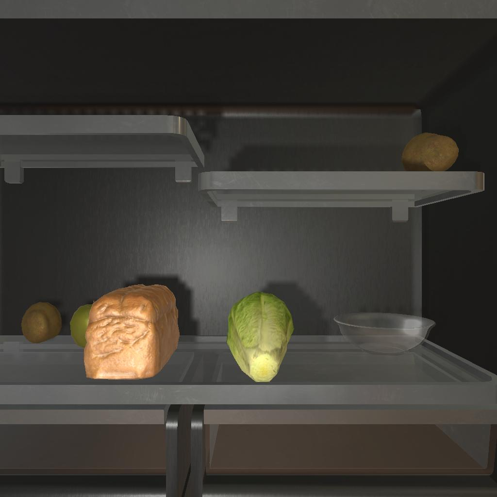

---------------------------------------------------------task: 22---------------------------------------------------------
--------------------------------------------------------------------------------------------------------------------------------------------------------------------
--------------------------------------------------------------------------------------------------------------------------------------------------------------------
Step:--------------------------------------------------------------------------2-------------------------------------------------------------------------------
----------------------------------------
VLM Prompt:
**Task**
Please perform as an embodied AI agent. Our final objective is to heat some egg and put it in countertop. Below is the plan for completing the task, the current observation, alongside historical data and admissible actions for the next step. Please determine the best action for the next step!
**Plan**
Below is a detailed step-by-step plan to complete the task.
1. Find an egg.
2. Pick up the egg.
3. Find a microwave.
4. Heat the egg with the microwave.
5. Find a countertop.
6. Place the heated egg on the countertop.
**Current Observation**
Displayed is an image capturing the current position of the agent.
**History Information**
Displayed are the previous observations with their corresponding actions.
Current State 1:
1. Place: Kitchen sink area
2. Step Index in Plan: 1
3. Objects: Egg, Fridge 1, Cabinet
4. Action: Go to fridge 1
Current State 2:
1. Place: At fridge 1
2. Step Index in Plan: 2
3. Objects: Egg
4. Action: Open fridge 1
**Admissible Actions**
(1): go to cabinet 1
(2): go to cabinet 2
(3): go to countertop 1
(4): go to cabinet 3
(5): go to cabinet 4
(6): go to cabinet 5
(7): go to sink 1
(8): go to cabinet 6
(9): go to drawer 1
(10): go to drawer 2
(11): go to sinkbasin 1
(12): go to cabinet 7
(13): go to cabinet 8
(14): go to coffeemachine 1
(15): go to microwave 1
(16): go to cabinet 9
(17): go to countertop 2
(18): go to cabinet 10
(19): go to drawer 3
(20): go to drawer 4
(21): go to garbagecan 1
(22): go to drawer 5
(23): go to cabinet 11
(24): go to cabinet 12
(25): go to cabinet 13
(26): go to cabinet 14
(27): go to stoveburner 1
(28): go to countertop 3
(29): go to stoveburner 2
(30): go to stoveburner 3
(31): go to stoveburner 4
(32): go to drawer 6
(33): go to cabinet 15
(34): go to cabinet 16
(35): go to cabinet 17
(36): go to cabinet 18
(37): go to toaster 1
(38): go to drawer 7
(39): go to countertop 4
(40): close fridge 1
(41): take bread 1 from fridge 1
(42): take lettuce 1 from fridge 1
(43): take bowl 1 from fridge 1
(44): take potato 1 from fridge 1
(45): take potato 2 from fridge 1
(46): take apple 1 from fridge 1
**Analysis Guideline**
1. Analyze the **History Information** and determine our current step in the plan and our current place.
2. List all visible objects related to the task in the current observation.
3. Analyze the objects in the current observation based on the history and the requirements for the current step, and then determine if we can complete the step with the current observation.
4. Analyze and decide on the most appropriate action to take.
5. Summarize the analysis using the following format: "Analysis: [The summarization of the analysis], The Most Appropriate Action: (i which is the integer.): [Selected action]"
**Notes**
1. We must complete each step of the plan in order and cannot skip steps when the previous ones are not finished.
2. For "Go to" actions listed as "go to xxx [n]", interpret this as there are n distinct actions available: "go to xxx 1", "go to xxx 2", ..., "go to xxx n". Select one specific action from these options instead of using "go to xxx [n]".
3. If receptacles such as drawers, cabinets, and so forth are closed in the current observation, we may try to open them.
4. Pay attention to synonyms and ensure clarity in the terms used.
5. If there is no history available, we are at the first step and the current place is "Unknown".
6. The most appropriate action must be in the **Admissible Actions**, and we cannot generate a new action that is not in the **Admissible Actions**.
**Answer**
Please select the most suitable action by following the **Analysis Guideline**, keeping the above **Notes** in mind.
----------------------------------------
----------------------------------------
VLM Response:
Analysis: According to the History Information, we are currently at step 2 in the plan, which is "Pick up the egg." The current place is "At fridge 1," and the egg is the object of interest. In the Current Observation, we are shown an image with a loaf of bread, a lettuce, a bowl, and two potatoes. There is no egg visible in this observation, which means we cannot complete step 2 with the current observation. Since the fridge is open (as per history), and the egg is not in the current view, it seems we need to explore other parts of the fridge that are not currently visible in the image. The most appropriate action would be to take the egg from the fridge if visible, but since it's not, the next best action is to close the fridge to update the view and possibly reveal the egg.
The Most Appropriate Action: (40): close fridge 1
----------------------------------------
----------------------------------------
>>> Refine VLM Response and Get Pure Action: close fridge 1
----------------------------------------
-----------------------------------------------------------------
Running time: 10.666860580444336 seconds
Total Money: 10.749649999999994
-----------------------------------------------------------------
-----------------------------------------------------------------
Summarization Prompt:
**Context**
Analysis: According to the History Information, we are currently at step 2 in the plan, which is "Pick up the egg." The current place is "At fridge 1," and the egg is the object of interest. In the Current Observation, we are shown an image with a loaf of bread, a lettuce, a bowl, and two potatoes. There is no egg visible in this observation, which means we cannot complete step 2 with the current observation. Since the fridge is open (as per history), and the egg is not in the current view, it seems we need to explore other parts of the fridge that are not currently visible in the image. The most appropriate action would be to take the egg from the fridge if visible, but since it's not, the next best action is to close the fridge to update the view and possibly reveal the egg.
The Most Appropriate Action: (40): close fridge 1
**Summary Format**
1. Place: [Specify the current location]
2. Step Index in Plan: [Dispkay the current step number in the plan before taking the current action]
3. Objects: [List the objects relevant to the task]
4. Action: [Describe the most appropriate action without the "(x)" and keep the integer of the object]
Please analyze the **Context** and summarize the analysis using the **Summary Format**.
-----------------------------------------------------------------
-----------------------------------------------------------------
Summarization Response:
1. Place: At fridge 1
2. Step Index in Plan: 2
3. Objects: egg, loaf of bread, lettuce, bowl, two potatoes
4. Action: close fridge 1
-----------------------------------------------------------------
-----------------------------------------------------------------
Text Observation:You close the fridge 1.
-----------------------------------------------------------------
UNSUCCEED